생성 모델이 아니라, 정책 클래스의 문제
이 강연에서 diffusion과 flow의 핵심 가치는 복잡한 행동을 그럴듯하게 생성하는 능력보다 더 구조적이다. 이들은 서로 다른 여러 정답을 평균으로 뭉개지 않고 보존하고, 긴 action chunk에 시간적 일관성을 부여하며, 강화학습 정책이 오프라인 데이터의 지지집합 가까이에 머물도록 돕는다. 그 결과 모방학습, VLA, offline-to-online RL, 실세계 로봇 후학습이 같은 표현력의 문제로 연결된다.
Diffusion 정책은 행동을 더 화려하게 만드는 기술이 아니라, 유효한 행동의 공간을 보존하면서 그 안에서 개선할 수 있게 만드는 좌표계다.
핵심 발견
다봉형 행동을 평균내지 않는다
서로 다른 유효 경로를 하나의 Gaussian 평균으로 합쳐 위험한 중간 행동을 만드는 문제를 피한다.
Action chunk가 시간 구조를 담는다
여러 step을 예측하고 일부를 실제 실행함으로써 긴 동작의 일관성과 안정성을 정책 표현에 넣는다.
VLM에 ‘운동피질’을 붙인다
언어·시각 표현은 거대한 백본이 담당하고, diffusion·flow 모듈은 고차원 연속 제어를 전담한다.
Offline-to-online 전환을 완화한다
표현력 있는 정책 제약과 noise steering이 데이터 밖 행동으로의 급격한 이동을 억제한다.
학습 경로 분리가 필요하다
Diffusion gradient가 VLM 표현을 훼손할 수 있어 stop-gradient와 보조 행동 손실이 사용된다.
최종 지표는 운영 처리량이다
실제 배치에서는 성공률뿐 아니라 복구, 연속 운용 시간, 시간당 완료 작업 수가 중요하다.
평균 행동은 때로 충돌이다
연속 제어의 오래된 기본값은 상태에서 평균과 공분산을 출력하는 Gaussian 정책이었다. 계산하기 쉽고 강화학습 알고리즘에 넣기 편하지만, 실제 행동 데이터가 가진 여러 개의 정답을 표현하기에는 지나치게 단순하다.
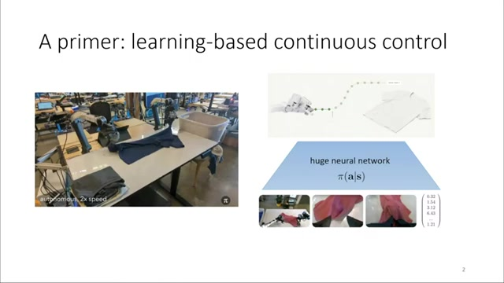
나무를 왼쪽이나 오른쪽으로 피하는 두 경로가 모두 데이터에 있다고 하자. 단일 Gaussian은 두 모드 사이의 평균, 곧 나무를 향하는 경로에 높은 확률을 줄 수 있다. 통계적으로 매끄러운 평균이 제어에서는 실제로 존재하지 않는 위험한 행동이 되는 셈이다.
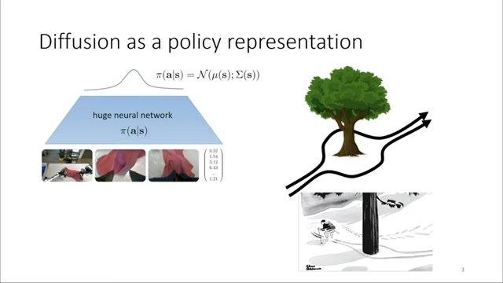
“정책 제약이 실패한 것이 아니라, 제약을 지키면서 모든 모드를 표현할 정책 클래스가 부족했다.” 강연의 offline RL 논지를 재구성한 요약
궤적 전체에서 조건부 action chunk로
초기 Diffuser는 시간축과 자유도축을 가진 궤적 행렬 전체에 unconditional diffusion을 적용했다. 첫 상태는 inpainting으로 고정하고, 보상과 제약은 guidance로 주입했다. 이후 Diffusion Policy는 관측에 조건화된 행동 시퀀스만 생성하는 더 직접적인 구조로 정리했다.
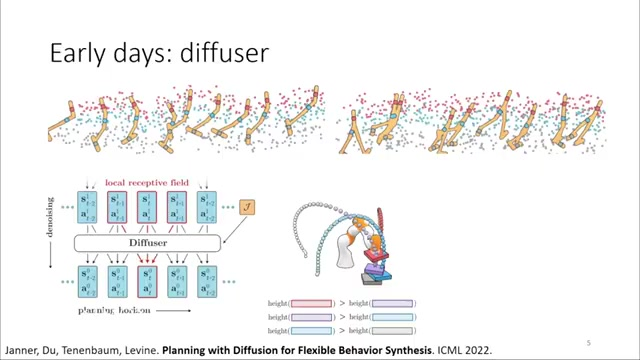
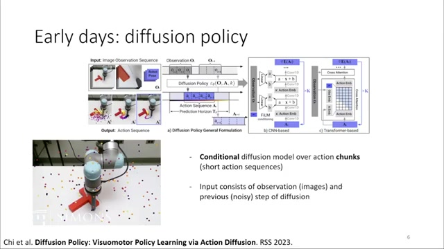
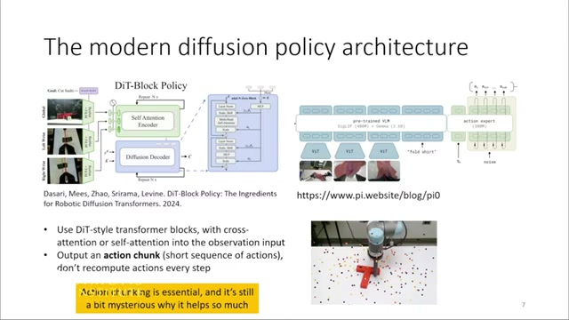
여기서 action chunk는 계산 편의를 위한 출력 묶음이 아니다. 발표의 π0 예시는 50 step을 예측하고 그중 25 step을 open loop로 실행한 뒤 다시 계획한다. 첫 step만 실행하면 성능 이득이 사라진다는 관찰은, 여러 step의 결합 분포 자체가 모방학습의 중요한 표현 단위임을 시사한다.
| 정책 클래스 | 장점 | 주요 한계 | 로봇 제어에서의 의미 |
|---|---|---|---|
| 단일 Gaussian | 단순하고 학습·샘플링이 빠름 | 다봉형 행동을 평균내거나 한 모드만 선택 | 위험한 중간 행동과 데이터 손실 가능 |
| Mixture | 여러 모드를 명시적으로 표현 | 모드 수와 고차원 상관구조 설계가 어려움 | 제한된 복잡도의 행동에는 실용적 |
| Autoregressive | 복잡한 조건부 분포 표현 | 순차 생성 비용과 오차 전파 | 토큰화 방식에 따라 연속 제어 해상도 제약 |
| Diffusion / Flow | 고차원·다봉형 action chunk를 유연하게 표현 | 학습과 반복 추론 비용이 큼 | 모드 보존, 정책 제약, latent steering에 적합 |
VLM에 신경 운동피질을 붙이다
로봇 파운데이션 모델의 기본 레시피는 웹 규모의 이미지·언어 사전학습, 여러 과제와 여러 로봇의 데이터, 그리고 연속 제어 fine-tuning의 결합이다. 중요한 질문은 범용 모델이 각 현장에 맞춘 전문 모델보다 실제로 더 잘할 수 있는가였다.
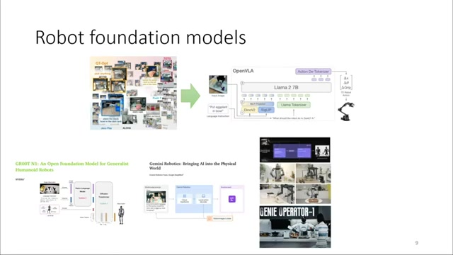
RT-X는 34개 연구실과 22종 로봇의 데이터를 모았고, 7개 연구실 평가에서 specialist 평균 41%보다 높은 63%를 기록했다. 서로 다른 과제의 이질적 지표를 평균한 수치라는 한계는 있지만, 통합 학습이 각 현장에서도 강한 전이를 만들 수 있다는 초기 증거였다.
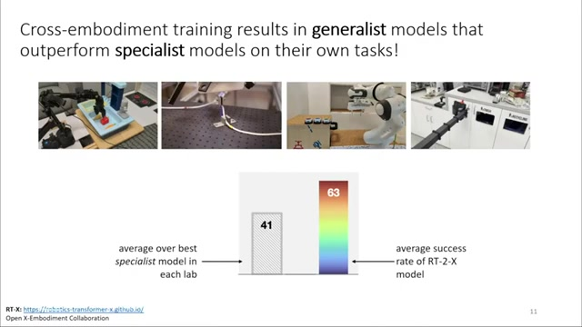
1세대의 토큰에서 2세대의 연속 행동으로
RT-2 계열의 1세대 VLA는 로봇 명령을 질문으로, 행동 숫자열을 답으로 바꿔 다음 토큰 예측에 넣었다. ASCII 숫자열 같은 거친 표현으로도 일반화는 개선됐지만, 고차원·고주파 연속 제어에는 한계가 뚜렷했다.
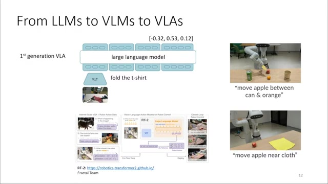
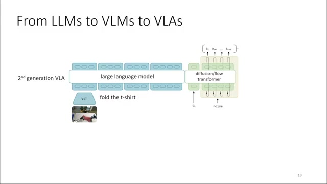
π0의 mixture-of-transformers 또는 별도 diffusion head는 VLM 표현을 참조하면서 양팔, 베이스, 손목 등 많은 자유도의 행동을 함께 생성한다. 덕분에 세탁물을 꺼내 이동하고 옷을 접는 긴 과제나, 작은 실수 뒤 다시 안정화하는 행동이 가능해졌다.
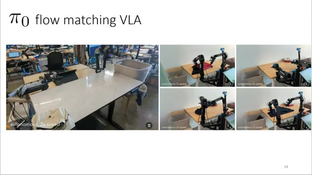
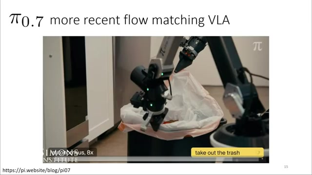
Knowledge insulation: 손실 경로를 분리한다
표현력이 공짜로 주어지는 것은 아니다. 발표에 따르면 순수 end-to-end diffusion은 discrete action 학습보다 5~10배 느렸고, action expert의 고분산 gradient가 VLM 백본의 언어 추종 능력을 훼손하는 현상도 나타났다.
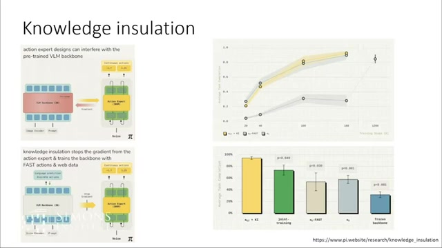
Knowledge insulation은 백본을 완전히 동결하는 방법이 아니다. 어떤 손실이 어느 표현을 바꿀 수 있는지 분리한다. 쉬운 과제에서는 빠른 discrete 학습의 이점을, 어려운 과제에서는 diffusion 정책의 최종 성능을 가져가며 end-to-end diffusion 대비 약 5배의 학습 속도 향상이 보고됐다.
좋은 사전학습이 전환 직후 무너지는 이유
실제 로봇을 처음부터 무작위로 움직이며 학습시키는 것은 비싸고 위험하다. 현실적인 경로는 기존 로그에서 최대한 좋은 정책을 만든 다음, 현장 상호작용으로 조금씩 개선하는 것이다. 문제는 두 단계 사이의 분포 이동이다.
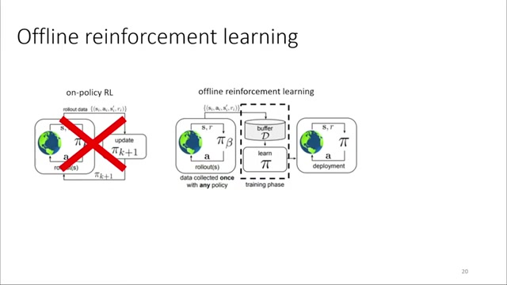
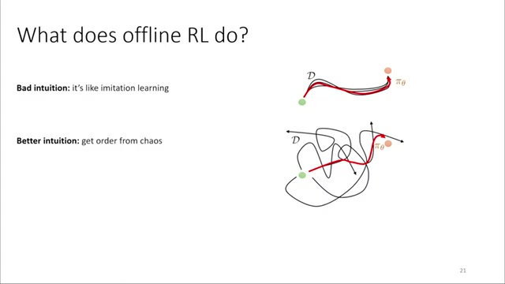
Q 함수는 자신의 약점을 공격하는 정책을 만든다
π(s) = arg maxₐ Q(s, a)
Q 함수는 특정 상태에서 행동한 뒤 얻을 누적 보상을 평가한다. 그러나 오프라인 데이터 밖의 행동에서는 추정 오차가 커진다. 정책은 바로 그 Q를 최대화하기 때문에 Q가 우연히 과대평가한 out-of-distribution 행동을 적극적으로 찾는다. 학습된 가치함수를 겨냥한 adversarial example이 정책 자체에서 만들어지는 셈이다.
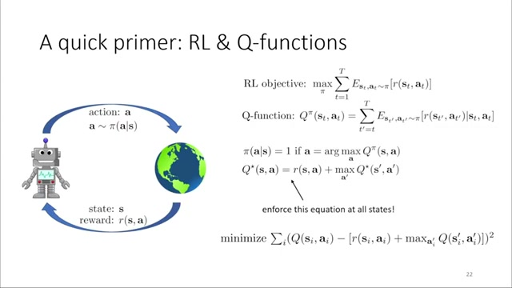
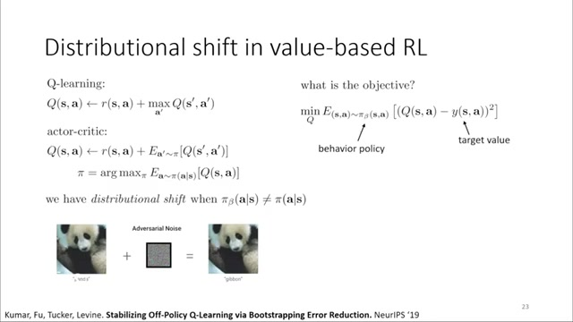
Pessimism 계열 offline RL은 미지 행동의 가치를 낮춰 이 문제를 막는다. 하지만 online 단계가 시작되면 처음 방문한 영역은 오프라인 학습에서 의도적으로 저평가된 곳이다. 새 경험과 기존 가치 추정 사이의 차이가 큰 gradient를 만들고 정책 성능을 급격히 흔든다.
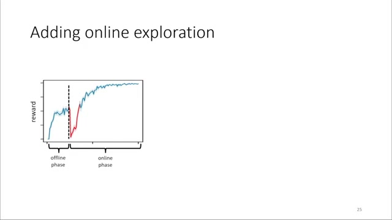
강력하지만 씁쓸한 기준선
RLPD는 정교한 offline pre-training 없이 online RL을 바로 시작하되 매 batch의 절반을 offline 데이터로 채운다. 오랫동안 복잡한 offline-to-online 방법보다 강했다는 사실은 역설적이다. 사전학습의 이점을 포기하더라도 전환 붕괴를 피하는 편이 나았다는 뜻이기 때문이다.
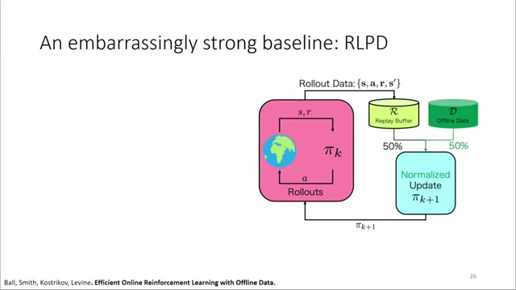
표현력 있는 정책 제약의 귀환
새 정책을 데이터 정책 가까이에 두는 제약은 자연스러운 해결책처럼 보인다. 과거에는 단순 Gaussian이 데이터의 여러 모드를 동시에 표현할 수 없어 평균화하거나 일부 모드를 버려야 했다. Diffusion은 데이터의 복잡한 지지집합을 유지한 상태에서 가치가 높은 영역으로 이동할 여지를 준다.
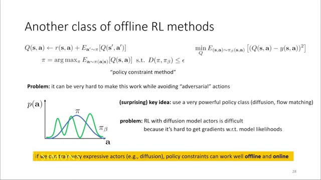
행동이 아니라 noise를 제어한다
Diffusion steering은 강화학습 문제를 다른 좌표계로 옮긴다. 모방학습으로 얻은 생성 사상은 고정하고, RL actor는 어떤 noise를 입력할지 학습한다. 정상적인 noise가 데이터 분포 안의 합리적 행동으로 변환되도록 사전학습돼 있으므로 행동 공간에서 직접 탐색하는 것보다 분포 이동을 통제하기 쉽다.
RL actor의 역할: 상태 s에서 가치가 높은 noise w를 선택
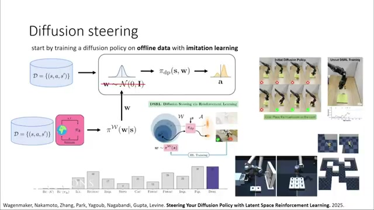
발표에서는 실제 로봇이 약 50 trial에 과제를 익혔고, 장기 퍼즐과 미로 offline benchmark에서도 경쟁력 있는 결과를 보였다고 설명한다. 이 접근은 offline과 online에 서로 다른 알고리즘을 붙이기보다 동일한 RL 메커니즘을 사용하면서 생성 모델이 행동의 유효 범위를 관리하게 한다.
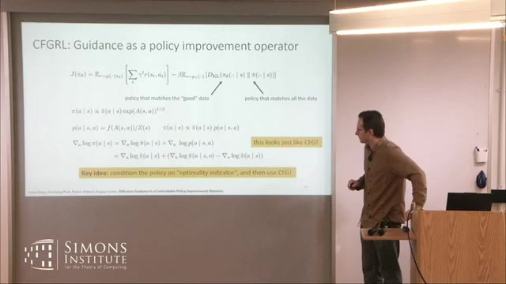
여러 행동을 샘플링한 뒤 Q 값이 가장 높은 행동을 실행하는 best-of-N도 steering이나 guidance와 결합할 수 있다. 발표자는 이를 언어 모델의 reasoning과 동일시하기보다, 추론 시 더 많은 계산으로 더 나은 후보를 선택하는 test-time compute의 유사물로 설명한다.
연구실 밖에서 측정해야 할 것
최종 목표는 VLA와 RL을 하나의 현장 시스템으로 결합하는 것이다. π*0.6은 VLA에 가치함수를 연결하고 행동의 value를 prompt 조건으로 사용한다. 추론 시 높은 value를 조건으로 더 좋은 행동을 생성하며, online 경험으로 계속 개선한다.
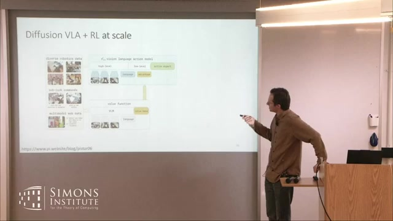
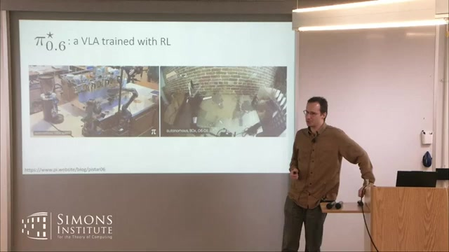
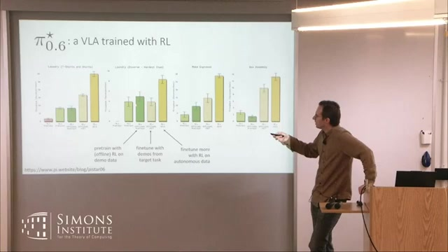
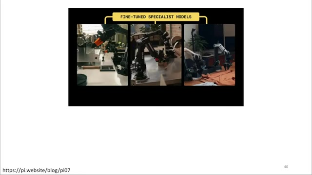
이 결과에서 중요한 지표는 일회성 성공률만이 아니다. 실패 뒤 작업 상태를 복구하는가, 사람이 개입하지 않고 얼마나 오래 운용되는가, 시간당 몇 개의 작업을 완료하는가가 실제 배치의 성패를 결정한다.
- 복구 능력: 작은 실수나 교란 뒤 정상 작업 흐름으로 돌아오는가.
- 연속 운용: 성공률이 아니라 개입 없이 유지되는 시간을 측정하는가.
- 처리량: 시간당 성공 작업 수가 실제 생산 가치로 이어지는가.
- 전환 안정성: Online 학습 초기에도 기존 성능과 안전을 유지하는가.
- 재통합: 개별 현장의 RL 경험을 범용 정책에 다시 흡수할 수 있는가.
무엇이 달라지는가
1. Diffusion의 가치를 표현력으로 재정의한다
이 기술의 의미를 이미지 생성의 유행이 로봇으로 확장된 사례로만 보면 중요한 연결을 놓친다. 같은 표현력이 모방학습의 모드 보존, VLA의 민첩한 action chunk, offline RL의 정책 제약을 동시에 가능하게 한다.
2. 생성 사상은 보존하고 방향만 조절한다
Diffusion 모델 전체를 RL로 크게 바꾸는 대신 latent 또는 noise 선택, guidance, value conditioning으로 방향을 조절하면 사전학습된 행동 지지집합을 더 잘 보존할 수 있다. 데이터 효율성과 안정성을 함께 노리는 설계 원칙이다.
3. 로봇 후학습은 선형 파이프라인이 된다
실용적인 구조는 대규모 imitation/VLA pre-training → 지지집합을 보존하는 RL → 현장 online 개선 → 범용 모델로 재통합으로 정리된다. 초기 정책을 버리고 새로 배우는 방식보다 장비와 데이터의 기존 투자를 유지한다.
4. 비교 실험의 기준도 바뀌어야 한다
Gaussian, mixture, autoregressive, diffusion과 flow 정책을 비교할 때는 backbone과 action chunk 길이를 통제해야 한다. 성공률뿐 아니라 모드 보존, offline-to-online 안정성, 추론 지연, 학습 FLOP와 운영 처리량을 함께 측정해야 표현력의 실제 비용과 이익을 판단할 수 있다.
아직 설명되지 않은 것들
강연은 여러 경험적 사례를 연결하지만 diffusion이 일관되게 유리한 이유에 대한 통일 이론을 제시하지 않는다.
RT-X의 41% 대 63%는 연구실마다 다른 과제와 metric을 평균한 값이다. 엄밀한 단일 benchmark 비교가 아니다.
Action chunk와 diffusion도 장기 error accumulation을 제거하지 않는다. 제어 분야의 예상보다 덜 심각했을 뿐이다.
Diffusion steering은 기본적으로 imitation policy가 학습한 행동 지지집합에 묶인다. 안전한 범위 밖 탐색은 열린 문제다.
Knowledge insulation은 실용적이지만 목적함수의 높은 분산과 공동학습 문제를 근본적으로 해결하는 우아한 해법은 아니다.
실배치 사례에는 안전 제약, 리셋 비용, 보상 설계와 장기 유지보수에 관한 정량 정보가 충분하지 않다.
Diffusion 정책의 이점은 생성 품질보다 데이터 지지집합을 보존하는 제어 가능한 좌표계를 제공한다는 데 있을 수 있다. 동일한 action chunk 길이와 backbone 아래 Gaussian, mixture, autoregressive, diffusion/flow 정책을 놓고 모드 보존, 전환 안정성, 학습 FLOP를 함께 측정할 필요가 있다.
출처와 해석 범위
- 발표자
- Sergey Levine, UC Berkeley
- 강연
- Diffusion in RL and robotics: how expressive policies changed how we use continuous actions
- 채널
- Simons Institute for the Theory of Computing
- 행사
- Diffusion Generative Modeling: Progress and Next Steps
- 게시일
- 재생 시간
- 48분 25초
- 원문
- YouTube 강연 페이지
- 요약 근거
- 영어 수동 자막과 영상 슬라이드
본 문서는 강연 내용을 주제별로 재배열한 해설형 연구 노트다. 수치와 시스템 설명은 발표자가 제시한 슬라이드와 자막에 근거하며, 논문별 세부 실험 조건을 독립적으로 재검증한 체계적 문헌 리뷰는 아니다. 이미지의 timecode는 해당 논점이 등장하는 영상 위치를 뜻한다.
| 주요 주장 | 영상 근거 | 해석 시 주의점 |
|---|---|---|
| Action chunk는 여러 step을 실제 실행할 때 효과가 있다. | 00:10:05 | Chunk 길이와 재계획 간격은 시스템별로 달라질 수 있다. |
| RT-2-X generalist 63%, specialist 평균 41%. | 00:14:35 | 이질적 과제와 metric을 평균한 비교다. |
| End-to-end diffusion 학습은 5~10배 느릴 수 있다. | 00:24:25 | 모델·구현·과제 구성에 의존하는 경험적 결과다. |
| Knowledge insulation은 약 5배 학습 속도 향상을 보였다. | 00:24:25 | 속도와 최종 성능의 비교 조건을 함께 확인해야 한다. |
| Diffusion steering으로 실제 로봇이 약 50 trial에 학습했다. | 00:41:40 | 안전 제약과 리셋 비용의 상세 수치는 강연에서 제한적이다. |
| 커피 로봇이 사무실에서 13시간 운용됐다. | 00:43:45 | 장기 신뢰성 전체를 대표하는 통계는 아니다. |